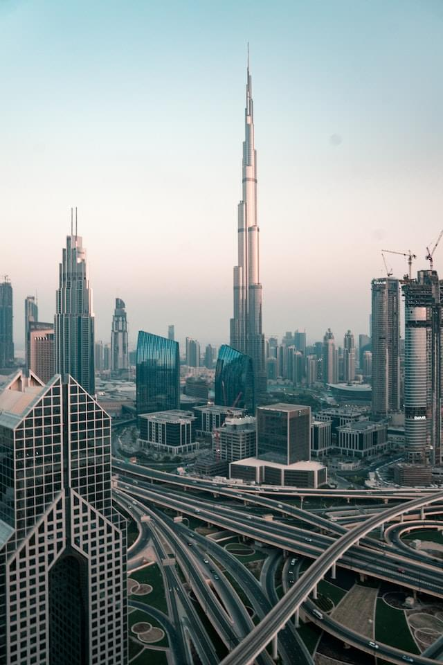

home.
careers.
contact.
#ACROS
Acros Stories
/
Innovative Tech Hub

Group of Tech Towers
AI-Driven Excellence
High-Tech Aerial Capture
Iconic India Gate Landmark
Tall Tower, Majestic Tree
Global Unity Illuminated
Classic Indian Heritage